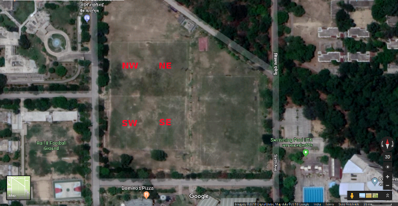

Please read this before raising a request to book the football ground
The current booking status:
The bookings in the calendar below refer to the bookings of the FOUR quarters of the ground (explained in the image below). The events are shown as:
<PURPOSE> -- <NAME OF THE REQUESTER> -- <PART OF THE GROUND BOOKED>.
How to book?
The ground is divided into FOUR quarters as shown in the image below.

The calendar shows the bookings for each of these quarters. If you want to book half the ground, then you must mention which of these quarters you need. This arrangement is designed to maximize participation by allowing to book a quarter of the ground. All bookings will be done at a first-mail-first-served basis.
To book the ground (or a part of it), mail the current coordinator(s) of the booking system from your IITK mail id with the following information. Put [FOOTBALL GROUND] in the subject line of your email (or your mail may be lost).
Information needed:
YOUR NAME:
YOUR AFFILIATION: student/staff/faculty, department/center
REQUESTED PART OF THE GROUND: NE/NW/SE/SW, for half ground mention, for example, SE+SW, or mention FULL GROUND
REQUESTED TIME SLOT: mention both the starting and end times, see the calendar above to find which are currently available
Please send your booking email by 5 PM the day before your requested date of the event. Please cancel your booking by sending an email whenever you feel you cannot make to the ground.